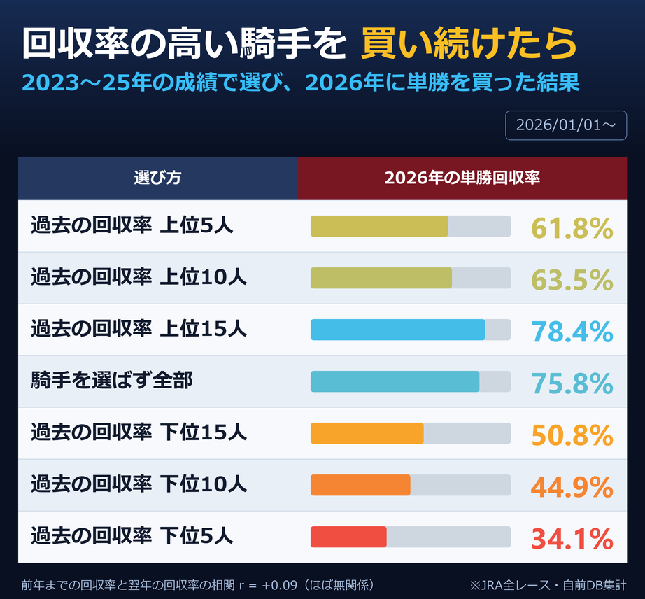

「回収率の高い騎手を買え」は本当か。過去3年の成績で選んで、翌年に実際に買ったらどうなるかを試しました。

2023〜25年の単勝回収率で騎手を並べ、上位から順に選んで2026年の全騎乗を単勝で買う、という手順です。選ぶのに使った期間と、買う期間は一切重なっていません。
結果は上のとおりで、上位10人を選んでも63.5%。騎手を選ばず全部買った75.8%を下回りました。前年までの回収率と翌年の回収率の相関は r=+0.09、ほぼ無関係です。
面白いのは下側で、過去の回収率が低かった騎手は翌年も低いままでした。ただしこれも腕の話ではありません。下位10人が乗っていた馬の平均オッズは119.2倍で、全体の64.6倍より大幅に高い。人気薄にばかり乗る騎手は、前の表のとおり構造的に回収率が下がります。つまり上下どちらの端も、測っているのは騎手ではなく乗る馬でした。
なぜ上位が続かないのか。回収率という数字は、数十回の当たり外れではなく数回の高配当で決まるからです。3年で1回、50倍の馬を持ってきた騎手は、それだけで回収率ランキングの上位に来ます。そして50倍の馬が来るかどうかは、翌年には持ち越せません。順位表の上のほうにいるのは、腕が良かった人ではなくたまたま大きいのを引いた人になりがちです。
同じ理由で、勝率や連対率のほうが翌年に残ります。こちらは1回の大当たりでは動かず、騎乗数ぶんの平均に落ち着くからです。実際、過去の勝率で選んだ場合の翌年回収率のほうがわずかに相関が高く出ました。ただしそれでも全体を超えはしません。勝率が高いことはすでに知られていて、オッズに入っているためです。
この話は騎手に限りません。調教師でも、血統でも、コース別でも、「過去の回収率が高かったもの」を選んで買う手法はすべて同じ検算にかけられます。選ぶ期間と買う期間を分ける。それだけで、見かけ上の有利なパターンの大半は消えます。